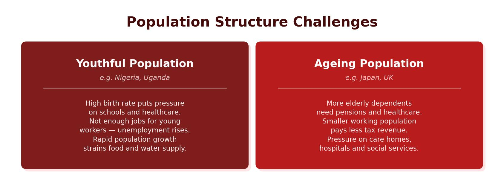

What Is Development?
Development is the progress a country makes in terms of economic growth, the use of technology and human welfare, with the aim of improving quality of life. It includes access to education, healthcare, housing, personal wealth and basic resources like water, energy and food.
Not all countries are at the same level of development. Geographers classify countries into three broad groups based on their wealth:
- High Income Countries (HICs) — richer countries with a GNI per capita of $12,746 or above. Around 80 countries fall into this category. Tertiary and quaternary jobs are common. Examples include the UK, USA and Australia.
- Newly Emerging Economies (NEEs) — countries with rapidly growing economies that sit between HICs and LICs. Secondary jobs are expanding fast. Examples include Brazil, India and Nigeria.
- Low Income Countries (LICs) — poorer countries with a GNI per capita of $1,045 or less. Around 30 countries are classified as LICs. Primary jobs like farming and mining dominate. Examples include Nepal and Ethiopia.
In the 1980s, the Brandt Line divided the world into the “rich north” and “poor south.” This model is now outdated because many southern countries (especially in South America and Asia) have developed into NEEs, and the simple north–south split no longer reflects reality.

Social Indicators of Development
Social indicators measure how well people live, rather than how much money a country earns. Key social indicators include:
- Life expectancy — the average number of years a person is expected to live. Higher in HICs (typically 75–85 years) and lower in LICs (often below 65 years).
- Infant mortality rate — the number of babies who die before their first birthday per 1,000 live births. High infant mortality suggests poor healthcare.
- Literacy rate — the percentage of adults who can read and write. Higher literacy usually means better education systems and more skilled workers.
- Birth and death rates — the number of births or deaths per 1,000 people per year. These change as countries develop.
- Access to clean water and doctors — basic indicators of healthcare quality and infrastructure.
Limitations of Social Indicators
Social indicators have significant limitations. Life expectancy, for instance, can vary hugely within a single country. In England, male life expectancy in the North East is over 1.5 years below the national average, while in London it is nearly 1.5 years above. Similarly, access to clean water in Mozambique differs sharply between urban and rural areas. A single national figure hides these internal inequalities.
Economic Indicators of Development
Economic indicators focus on how much wealth a country produces. The main ones are:
- GDP (Gross Domestic Product) — the total value of goods and services produced by a country in one year.
- GNI per capita — the total value of a country’s goods and services divided by its population. This gives an average income per person.
GNI per capita takes the mean average of income across the whole population. This can be heavily skewed by extreme wealth at the top. For example, if most people in a class earn £10,000 a year but two earn £1,000,000, the average looks far higher than what most people actually earn. The same problem applies at the national scale — a country might have a high GNI per capita but enormous inequality, with millions living in poverty.
The Human Development Index (HDI)
Because no single indicator gives the full picture, the Human Development Index (HDI) was created. HDI combines three measures — GNI per capita, life expectancy and average years in education — into a single score between 0 and 1. A score closer to 1 indicates higher development. HDI is considered the most reliable single measure because it accounts for both economic wealth and quality of life.
Individual development indicators can be misleading. Cuba has a literacy rate of 99.7% but a low GDP, while the Maldives has a high GDP but a lower literacy rate. Using multiple indicators together — like HDI — gives a much more accurate picture of a country’s development.
The Demographic Transition Model (DTM)
The Demographic Transition Model (DTM) is a theoretical model that shows how a country’s population changes as it develops. It links birth rates, death rates and population growth to economic development across five stages:
- Stage 1 — High fluctuating: Both birth and death rates are high, so population stays low and stable. Very few countries remain at this stage today (only a few remote groups, such as tribes in the Amazon rainforest). Primary jobs dominate.
- Stage 2 — Early expanding: Death rates fall due to improved food supply, water and basic healthcare, but birth rates remain high. Population grows rapidly. LICs like Afghanistan and Ethiopia sit at this stage. There is little economic development and subsistence agriculture is common.
- Stage 3 — Late expanding: Birth rates begin to fall as education improves, women gain more rights (emancipation of women), and contraception becomes available. Population continues to grow but more slowly. NEEs like Brazil are typically at this stage. Quality of life starts to improve.
- Stage 4 — Low fluctuating: Both birth and death rates are low. Population is high but stable. HICs like the UK, USA and France are at this stage. Excellent economic development means tertiary and quaternary jobs dominate. Health and education systems are strong.
- Stage 5 — Decline: Death rates exceed birth rates, causing population to decline. This happens in some HICs like Germany and Japan where people choose to have fewer or no children due to career focus, high cost of living and ageing populations.
As countries move through the DTM stages, their economies shift from primary (farming, mining) to secondary (manufacturing) to tertiary and quaternary (services, research). This mirrors rising development. In Stage 2, children are needed to work the land and death rates are high, so families are large. By Stage 4, better healthcare and education mean people live longer, have fewer children, and enjoy a higher quality of life. The DTM is a useful tool, but not all countries follow it exactly — some skip stages or develop unevenly.
As a country moves through the DTM, the types of jobs change. Stage 1–2 countries rely on primary industries. Stage 3 sees growth in secondary (manufacturing) jobs. Stages 4–5 are dominated by tertiary (services) and quaternary (knowledge-based) jobs.